측량및지형공간정보기사 (2005-09-04 기출문제)
1과목: 측지학 및 위성측위시스템
1. 다음 중 탄성파를 이용할수 없는 경우는?
- 지질구조의 파악
- 지표상 두점간 거리의 정밀측정
- 유전조사 및 탄전 탐사
- 지반탐사
(정답률: 93%)

2. 지오이드(geoid)에 대한 설명으로 틀린 것은?
- 지오이드는 중력장이론에 다라 물리적으로 정의한다.
- 지오이드를 표고 0으로 하여 수준측량을 실시한다.
- 모든 지점에서 지구타원체의 법선과 지오이드의 법선은 일치한다.
- 대륙에서의 지오이드면은 지구타원체면보다 높다.
(정답률: 0%)
3. 구면삼각측량에서 30㎞인 수평면을 측량할 때 조표의 높이를 최소 몇 m 이상 설치해야 하는가? (단, 지구의 곡률반경은 6370㎞, 굴절계수는 0.14, 측정기계의 높이는 고려하지 않는다.)
- 약 12m
- 약 37m
- 약61m
- 약 83m
(정답률: 87%)
4. 측지학에 대한 설명으로 옳은 것은?
- 지상으로부터 발사 또는 방사된 전파를 인공위성으로 흡수하여 해석함으로써 지구자원 및 환경을 해결할 수있는 것을 위성측량이라 한다.
- 천체의 고도, 방위각 및 시각을 관측하여 관측지점의 지리학적 경위도 및 방위를 구하는 것을 천문측량이라 한다.
- 기하학적 측지학은 지표상의모든 점간의 상호관계를 결정하고 지구 내부구조 및 특성을 연구하는 분야이다.
- 지구 표면상의 길이 및 각도 그리고 높이의 관측에 의한 3차원 좌표결정을 위한 측량만을 말한다.
(정답률: 92%)
5. 해수면의 높이 변화를 위하여 위성 고도계에서 관측하는 관측치는?
- 위성에서 송신한 신호가 해수면에 반사되어 돌아오는 시간
- 위성과 해상의 목표물과의 거리
- 위성과 해상의 목표물과의 각도
- 위성에서 촬영하는 영상
(정답률: 91%)
6. 다음 중 중력의 보정 요소가 아닌 것은?
- 지형보정
- 고도보정
- 부게보정
- 연직각 보정
(정답률: 70%)
7. 다음중 다중경로(멀티패스)오차를 줄일 수 있는 방법으로 적합하지 않은 것은?
- 관측시간을 길게 한다.
- 안테나로 들어오는 위성신호의 입사각을 낮춘다.
- 안테나의 설치환경(위치)를 잘 선택한다.
- Choke ring 안테나와 같이 ground plane이 장착된 안테나를 사용한다.
(정답률: 77%)
8. 지구가 타원형인 증거가 되는 사항에 대한 설명으로 틀린 것은?
- 고위도로 갈수록 만유인력이 크다.
- 고위도로 갈수록 곡률반경이 크다.
- 위도차 1˚ 의 거리는 고위도로 갈수록 크다.
- 중력은 적도상에서 가장 크다.
(정답률: 80%)
9. 인공위성을 이용하는 측량중 원래 항행용으로 개발되었으나 오늘날은 극운동 또는 지구의 자전속도 변동조사 및 측지학적 위치결정에 이용 되고 있는 것은?
- 방향 관측법
- 거리 관측법
- 전파방식
- NNSS
(정답률: 85%)
10. 천구상에서 천정과 동점 및 서점을 잇는 대원으로 자오선과 직각으로 교차하는 교선은?
- 항정선(loxodrome)
- 측지선(geodesic line)
- 모유선(prime vertical)
- 평행선(parallel lines)
(정답률: 75%)
11. 상대측위 방법(간섭계측위)의 설명 중 옳지 않은 것은?
- 전파의 위상치를 관측하는 방식으로서 정밀측량이 주로 사용된다.
- 위상차의 계산은 단순차, 2중차, 3중차의 차분 기법을 적용할 수 있다.
- 수신기 1대를 사용하여 모호 정수를 구한 뒤 측위를 실시한다.
- 위성과 수신기간 전파의 파장 개수를 측정하여 거리를 계산한다.
(정답률: 92%)
12. 지각평형(Isostasy)에 대한 설명으로 옳지 않은 것은?
- Isostasy는 등압과 수직을 의미한다.
- Isostasy는 해양 또는 대륙등의 대규모인 구조에 잘 성립한다.
- Isostasy가 성립되지 않은 곳은 해구, 해령이다.
- Isostasy는 지각의 강성, 맨틀의 점성에도 성립한다.
(정답률: 79%)
13. 한 변의 길이가 10㎞인 구며 정삼각형인 구역의 구과량은? (단, 구의 반지름은 6370㎞로 가정)
- 0.1″
- 0.2″
- 1.0″
- 2.0″
(정답률: 70%)
14. GPS 관측도 중 장애물 등으로 인하여 GPS 신호의 수신이 일시적으로 단절되는 현상을 무엇이라고 한느가?
- 사이클 슬립(cycle slip)
- SA(Selective Availability)
- AS(Anti Spoofing)
- 모호 정수(Ambiguity)
(정답률: 93%)
15. 다음 중 항공측량부분의 GPS 응용에서 GPS의 단점을 보완할 수 있는 장치로서 촬영비행기의 위치를 구하는 데 많이 활용되고 있는 것은?
- 관성항법장치(INS)
- 레이저스캐너(LIDAR)
- HRV센서
- MSS 센서
(정답률: 75%)
16. 다음 중 물리학적 측지학에 속하지 않는 것은?
- 길이 및 시의 결정
- 지구의 형상해석
- 지자기 측량
- 탄성파 측량
(정답률: 15%)
17. 다음 중 측지학에서 다루는 범위에 해당되지 않는 것은?
- 지구의 형상 결정
- 지구의 중력장 결정
- 지구상의 임의의 점의 위치 결정
- 지구의 화학적 성분 결정
(정답률: 82%)
18. 중력이상의 주된 원인은?
- 태양과 달에 의한 인력
- 지하 물질의 밀도 불균일
- 화산폭발
- 지구의 자전 운동
(정답률: 84%)
19. GPS 측량시 고려해야 할 사항에 대한 설명으로 옳지 않은 것은?
- 정지측량시는 4개 이상, RTK 측량시에는 5개 이상의 위성이 관측되어야 한다.
- 가능하면 15° 이상의 임계 고도각을 유지하여야 한다.
- DOP 수치가 3이하인 경우는 관측을 하지 않는 것이 좋다.
- 철탑이나 대형 구조물, 고압선 직하지점은 회피하여야 한다.
(정답률: 93%)
20. 지자기의 3요소에 해당되지 않는 것은?
- 복각
- 편각
- 수평분력
- 연직분력
(정답률: 90%)
2과목: 응용측량
21. 다음 수평곡선설치에서 곡선의 반지름(R)이 50m, x가 30m, 장현(AB)가 80m이면 중거(y)는?
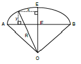
- 10m
- 12m
- 14m
- 15m
(정답률: 79%)
22. 다음 그림은 도로중심선 측량도이다. 원곡선의 반지름(R)이 100m, α=45° , β=75 °,
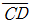
= 100m 일 때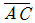
의 길이는?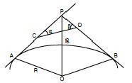
- 61.7m
- 71.8m
- 83.6m
- 89.6m
(정답률: 82%)
23. 노선측량의 단곡선 설치시 교각 60° , 곡선 반지름 10m, 곡선 시점은 No10+15m일때 도로기점에서 곡선 종점까지의 거리는? (단, 중심 말뚝간격 20m)
- 104.72m
- 214.34m
- 356.87m
- 319.72m
(정답률: 10%)
24. 양터널의 중심선상에 기준점을 설치하고 이 두점의 좌표를 구하여 터널을 굴진하기 위한 방향을 맞춤과 동시에 정확한 거리를 찾아내는 것인 목적인 터널 외 측량은?
- 수심측량
- 수준측량
- 중심선측량
- 지형측량
(정답률: 70%)
25. 상향구배 20/1,000, 하향구배 40/1,000 인 두 직선이 반경 1,000m의 단곡선 중에서 교차할 때 접선장은?
- 20m
- 30m
- 40m
- 50m
(정답률: 62%)
26. 상∙하수도, 가스, 통신 등의 건설 및 유지관리를 위한 자료제공의 역할을 하는 측량은?
- 초구장측량
- 관계배수측량
- 건축측량
- 지하시설물측량
(정답률: 65%)
27. 갱내의 고저차 측량에서 두 측점이 천정에 설치되어 있을 때 아래와 같은 결과를 얻었다. 두 점간의 고저차는?
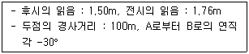
- 35.45m
- 49.74m
- 50.26m
- 57.47m
(정답률: 65%)
28. 삼각형의 토지의 밑변과 높이를 20m tape로 측정하여 삼사법으로 면적을 구하였더니 47.15m2였다. 이 tape을 실제 검정한 결과 20m에서 10㎝가 늘어나 있었다면 이 때 삼각형의 실제면적은?
- 46.21m2
- 46.67m2
- 47.62m2
- 48.09m2
(정답률: 67%)
29. 다음 중 경관의 3요소와 거리가 먼 것은?
- 경제성
- 조화감
- 순화감
- 미의식의 상승
(정답률: 85%)
30. 가로, 세로의 축척이 각각 1/50, 1/20로 된 횡단면도에서 임의의 정사각형의 도상면적이 10cm2일 때 실제 면적은?
- 0.5m2
- 1.0m2
- 1.5m2
- 2.0m2
(정답률: 47%)
31. 터널의 곡선부 측설법으로 적당하지 않은 방법은?
- 지거법
- 점토 및 성토고
- 중앙종거법
- 현편거법
(정답률: 0%)
32. 다음중 도로의 노선측량에서 종단면도에 기재하지 않는 사항은?
- 용지의 경계
- 절토 및 성토고
- 계획고
- 곡선 및 구배
(정답률: 84%)
33. 유하거리 정도가 10/L(%), 유하거리 정도가 30/L(%)라면 관측유속 1.0m/sec의 경우 그 오차를 2%이내에 있도록 하기 위한 부자 유하거리(L)는?
- L≥15.8m
- L≥20.8m
- L≥25.8m
- L≥30.6m
(정답률: 58%)
34. 용지 측량 순서 중 맞는 것은?
- 작업계획 → 경계확인 → 면적계산 → 경계측량 → 자료조사 → 용지실측도, 원도 등의 작성
- 자료조사 → 작업계획 → 경계확인 → 경계측량 → 면적계산 → 용지실측도, 원도 등의 작성
- 작업계획 → 자료조사 → 경계확인 → 경계측량 → 면적계산 → 용지실측도, 원도 등의 작성
- 작업계획 → 경계측량 → 경계확인 → 자료조사 → 면적계산 → 용지실측도, 원도 등의 작성
(정답률: 62%)
35. 다음과 같이 삼각형의 토지를 면적비 2:3으로 분할하려면 CD의 거리를 얼마로 하면 되는가?
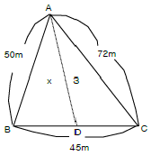
- 14m
- 17m
- 24m
- 27m
(정답률: 86%)
36. 유토곡선의 특성 중 옳지 않은 것은?
- 곡선이 하향인 구간은 절토구간이고, 상향인 구간은 성토구간이다.
- 곡선의 저점은 성토에서 절토로 정점은 절토에서 성토로 바뀌는 점이다.
- 극대치와 다음 극대치의 두 점간 종거의 차는 전체 토공량을 나타낸다.
- 유토곡선이 평행선(기선)과 교차점은 성, 절토의 균형선으로 토공 평행선이라 한다.
(정답률: 0%)
37. 원곡선 설치를 위한 조건이 다음과 같을 경우 원곡선 시점(B.C)부터 원곡선상 처음 중심점(P1)까지의 편각은?
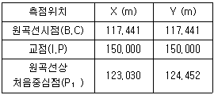
- 3° 26′ 20″
- 6° 26′ 20″
- 45° 00′ 00″
- 51° 26′ 20″
(정답률: 84%)
38. 하천의 삼각측량에 가장 적합한 삼각망은?
- 사변형 삼각형
- 유심 삼각망
- 단열 삼각망
- 단 삼각형
(정답률: 82%)
39. 하천의 수위 중에서 어느 기간에 높은 수위와 낮은 수위의 관측횟수가 같은 수위는 어느 수위인가?
- 평균수위
- 평균저수위
- 평수위
- 갈수위
(정답률: 90%)
40. 다음중 하천측량에서 고저측량작업과 거리가 먼 것은?
- 거리표설치
- 종단 및 횡단측량
- 심천측량
- 유속측량
(정답률: 0%)
3과목: 사진측량 및 원격탐사
41. GIS의 자료처리 및 구축을 위한 전반적인 작업과정으로 옳은 것은?
- 자료수집-자료입력-자료처리-자료조작 및 분석-출력
- 자료수집-자료조작 및 분석-자료처리-자료입력-출력
- 자료수집-자료입력-출력-자료처리-자료조작 및 분석
- 자료수집-자료입력-자료조작 및 분석-자료처리-출력
(정답률: 59%)
42. 항공사진 카메라의 초점거리 150㎜, 촬영경사 4° 로 평지를 촬영하였다. 이 사진의 주점으로부터 등각점까지의 거리는?
- 4.1㎜
- 4.4㎜
- 5.2㎜
- 5.4㎜
(정답률: 0%)
43. 초점거리 15㎝, 화면크기 23×23㎝의 카메라로 표고점의 높이 오차가 등고선 간격의 1/3이 되도록 하기 위해서는 촬영고도를 약 얼마로 하여야 하는가? (단, 축척 1/25000인 지형도의 등고선 간격 2m, 사용도화기의 시차측정 오차는 밀착필름에서 ±40㎛)
- 1,350m
- 1,430m
- 1,530m
- 1,610m
(정답률: 43%)
44. 지상이나 항공기 및 인공위성 등의 탑재기(platform)에 설치된 감지기(sensor)를 이용하여 지표, 지상, 지하, 대기권 및 우주공간의 대상물에서 반사 혹은 방사되는 전자기파를 탐지하고 이들 자료로부터 토지, 환경 및 자원에 대한 정보를 얻어 이를 해석하는 기법은?
- GPS
- DTM
- 원격탐사
- 토탈스테이션
(정답률: 75%)
45. 사진판독에 관한 설명 중 틀린 것은?
- 색조는 빛의 반사에 의한 것으로 식물의 집단이나 대상물의 판별에 도움이 된다.
- 질감은 사진축척에 따라 변하지 않는 판독요소이다.
- 크기에 대한 육안의 분해능은 보통 0.2.㎜ 정도이다.
- 과고감은 평탄한 지역에서의 지형판독에 도움이 된다.
(정답률: 29%)
46. 다음 중 해석적 항공삼각 측량과 거리가 먼 것은?
- 광속조정법
- 독립모형조정법
- 다항식조정법
- 멀티플렉스법
(정답률: 67%)
47. 벡터자료처리 중에서 발생되며 두 입력지도의 경계가 불일치할 때 경계부근에서 주로 생성되는 의미 없는 작은 polygon을 무엇이라 하는가?
- sliver polygon
- small polygon
- section polygon
- error polygon
(정답률: 84%)
48. 촬영고도가 표고 5000m에서 초점거리 25㎝인 사진기로 촬영한 사진에 나타난 표고 600m인 산의 축척은?
- 1/22,800
- 1/22,400
- 1/20,000
- 1/17,600
(정답률: 85%)
49. 원격탐사(Remote Sensing)의 특징으로 옳지 않은 것은?
- 짧은 기간 내에 지역을 동시에 관측할 수 있으며 반복관측이 가능하다.
- 회전주기가 일정하므로 원하는 지점 및 시기에 관측이 용이하다.
- 관측이 좁은 시야각으로 얻어진 영상은 정사투영에 가깝다.
- 탐사된 자료가 즉시 이용될수 있으며 재해, 환경문제 해결이 편리하다.
(정답률: 67%)
50. 다음 ( ) 안에 알맞은 말로 짝지어진 것은?
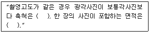
- 크고, 작다
- 크고, 작다
- 작고, 작다
- 작고, 크다
(정답률: 86%)
51. 편위수정을 거친 사진을 집성하여 만든 사진지도는?
- 중심투영 사진지도
- 약조정집성 사진지도
- 반조정집성 사진지도
- 조정집성 사진지도
(정답률: 86%)
52. 초점거리 15㎝, 화면 크기 23㎝×23㎝ 면 광각카메라로 비행고도 4500m에서 시속 240㎞의 운항속도로 항공사진을 촬영할 때 사진노출점 간의 최소 소요시간은?
- 41.4초
- 35.4초
- 20.4초
- 15.4초
(정답률: 60%)
53. GIS의 도형자료 중 면형 자료가 아닌 것은?
- 필지 관리용 지적선
- 노선 분석용 도로 차선
- 선거집계를 위한 구역선
- 건물대장 관리용 건물
(정답률: 77%)
54. 수치표고모형(DEM)으로부터 얻어지는 자료가 아닌 것은?
- 경사도
- 교통량 분포
- 향(aspect)계산
- 등고선
(정답률: 94%)
55. 다양한 종류의 자료를 통합하여 GIS 데이터베이스를 구축할 경우에 고려하여야 할 사항으로 옳지 않은 것은?
- 자료의 표준화
- 자료관리의 효율성 향상
- 자료의 신뢰성
- 자료의 중복성 증대
(정답률: 92%)
56. 스파게티 모델에 대한 설명으로 틀린 것은?
- 상호연결성이 열여된 점과 선의 집합체이다.
- 점과 선 사상 사이의 관계가 정합되어 있다.
- 수작업으로 디지타이징된 지도자료가 대표적이다.
- 모든 면 사상이 일련의 독립된 좌표의 집합으로 저장되므로 공간을 많이 차지한다.
(정답률: 34%)
57. 완전한 수직사진(경사각 0° )이라면 다음 설명 중 옳은 것은?
- 주점, 등각점, 연직점이 모두 일치한다.
- 주점과 등각점은 일치하나 연직점은 일치하지 않는다.
- 등각점과 연직점은 일치하나 주점은 일치하지 않는다.
- 모두 일치 하지 않는다.
(정답률: 90%)
58. 다음 중 벡터형자료에서 갖는 폴리곤 구조(위상모형)의 특성이 아닌 것은?
- 폴리곤의 형상(shape)
- 폴리곤의 압축성(compress)
- 폴리곤의 계급성(hierarchy)
- 폴리곤의 인접성
(정답률: 84%)
59. 27㎞×9㎞ 의 지역을 축척 1/30000로 촬영할 때 필요한 입체모델수는? (단, 사진크기=23㎝×23㎝, 종중복도=60%, 횡중복도=30%)
- 10 모델
- 20 모델
- 30 모델
- 40 모델
(정답률: 58%)
60. 기복변위에 대한 설명으로 틀린것은?
- 중심투영의 성질 때문에 생긴다.
- 변위량은 촬영고도에 반비례한다.
- 변위량은 지형지물의 비고에 반비례한다.
- 변위량은 사진주점에서 상이 생기는 거리에 비례한다.
(정답률: 85%)
4과목: 지리정보시스템
61. 평판츨량에서 축척 1/1200의 도면을 작성할 때 도상의 점위치의 허용 오차를 0.2㎜라 하면 측점의 중심맞추기 허용오차는?
- 120㎜
- 150㎜
- 200㎜
- 250㎜
(정답률: 79%)
62. 직육면체인 저수탱크의 용적을 구하고자 한다. 밑변 a, b와 높이 h에 대한 측정결과가 다음과 같을 때 부피오차는?
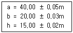
- ±10m3
- ±21m3
- ±28m3
- ±34m3
(정답률: 91%)
63. P점의 표고를 구하기 위하여 수준점 A,B,C에서 고저측량을 실시하여 다음 표와 같은 결과를 얻었다. P점의 최확치는 얼마인가?
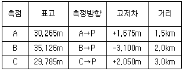
- 30.997m
- 31.725m
- 31.945m
- 31.325m
(정답률: 16%)
64. 축척이 1/50000 지형도 상에서 두점간의 거리가 8.13㎝일 때 축척이 다른 지형도에서 이 두점간의 거리가 52.65㎝이었다면 이 지형도의 축척은?
- 약 1/77
- 약 1/770
- 약 /7700
- 약 1/77000
(정답률: 92%)
65. 지형공간정보체계(GSIS)에 대한 특징으로 옳은 것은?
- 위치정보와 속성정보를 분리하여 저장괸리 하므로 시스템 운영이 비효율적이다.
- 점, 선, 면으로 표시되는 공간적 정보를 다양한 목적과 형태로 분석, 처리할 수 있는 시스템이다.
- 위성영상자료나 센서스 조사자료로는 사용할 수 없다.
- 중복분석이나 통계분석이 어려워 의사결정수단으로 이용될 수 없다.
(정답률: 50%)
66. 다음은 트래버스 측량에서 폐합오차를 분배하는 컴퍼스 법칙과 트랜싯 법칙을 설명한 것이다. 옳지 않은 것은?
- 컴파스 법칙은 거리의 정도와 각 관측의 정밀도가 같을 경우에 사용된다.
- 컴파스 법칙은 각 측선의 길이에 비례하여 배분하는 방법이다.
- 트랜싯 법칙은 거리의 오차를 평균 배분하는 방법이다.
- 트랜싯 법칙은 각 측정의 정밀도가 거리 측량의 정밀도보다 좋을 경우에 이용된다.
(정답률: 9%)
67. 지형공간정보체계에서 이용되는 격자형 자료의 압축방법이 아닌 것은?
- 사슬부호(chain code)
- 연속분할부호(run-length code)
- 블록부호(bolck code)
- 평면부호(flat code)
(정답률: 64%)
68. 다음 중 일반적으로 오차론에서 다루는 오차는?
- 정오차
- 착오
- 우연오차
- 누차
(정답률: 77%)
69. 평균거리 2㎞에 대한 삼각측량에서 시준점의 편심에 대한 영향이 11″ 일 경우에 이에 의한 편심거리는?
- 약0.1m
- 약0.22m
- 약0.42m
- 약0.81m
(정답률: 40%)
70. 거리측정에서 줄자로 1회 측정시 확률오차가 ±0.03m이면 30m 줄자도 270m를 측정할 때 확률오차는?
- ±0.03m
- ±0.09m
- ±0.27m
- ±0.30m
(정답률: 65%)
71. 하천이나 항만, 해안 등을 심천측량하여 측점에 숫자를 기입하여 그 높이를 표시하는 방법은?
- 영선법
- 음영법
- 점고법
- 등고선법
(정답률: 82%)
72. 트래버스 측량에 의해서 높은 정확도를 요하는 기준점의 위치를 결정하는 가장 좋은 방법은?
- 삼각점에서 다른 삼각점에 결합하는 트래버어스
- 삼각점에서 동일 삼각점에 페합하는 트래버어스
- 정도가 높은 삼각점에서 출발하는 개방 트래버어스
- 임의 점에서 삼각점으로 결합되는 트래버어스
(정답률: 84%)
73. 다음 삼각측량의 작업순서를 옿은 순서대로 배열된 것은?
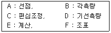
- A-B-C-D-E-F
- A-C-F-B-E-D
- A-F-E-D-C-B
- A-F-D-B-C-E
(정답률: 79%)
74. 지형공간정보체계(GSIS)의 자료수집 단계에 관련된 일반적인 설명으로 옳지 않은 것은?
- 수집자료의 정확도는 이후에 처리 및 분석단계에서 향상되므로 정확도에 상관없이 많은 자료를 얻는 것이 중요하다.
- GSIS 사업 전체 비용에 많은 부분이 소요되는 중요한 사업이다.
- 국내의 경우 기존자료가 미비하므로 자료들을 신규 제작하여야 하는 경우가 많아 비용이 많이 소요되는 단계가 된다.
- GSIS에서 공통적으로 이용되는 자료들은 가급적 국가적 사업에 의해 표준적으로 제작하는 것이 좋다.
(정답률: 80%)
75. 공간상에 나타난 연속적인 기복변화를 수치적으로 표현하는 방법을 무엇이라 하는가?
- DEM
- MOSS
- BIL
- CAD
(정답률: 75%)
76. 다음 중 대규모 지역의 지형도 작성을 위한 세부측량에 가장경제적으로 사용할 수 있는 측량방법은?
- 평판측량
- 수준측량
- 사진측량
- 천문측량
(정답률: 73%)
77. 30m에 대하여 6㎜ 늘어나 있는 줄자로 정방형의 지역을 측량한 결과 62500m2이었다. 실제면적은?
- 62525m2
- 62500m2
- 62475m2
- 62550m2
(정답률: 92%)
78. 다음 그림과 같은 결합트래버스 측량의 측각오차식으로 옳은 것은? (단, n은 변의 수, [α]는 측정각의 힘)
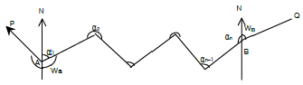
- Δα = Wa - Wb + [α] - 180° (n-1)
- Δα = Wa - Wb + [α] - 180° (n+1)
- Δα = Wa - Wb + [α] - 180° (n-3)
- Δα = Wa - Wb + [α] - 180° (n+3)
(정답률: 84%)
79. 측점이 경도의 천장에 설치되어 있는 갱내 수준측량에서 다음 그림과 같은 수준측량 관측결과를 얻었다. A점의 지반고가 15.32m일 때 C점의 지반고는?
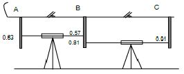
- 15.26m
- 15.36m
- 15.46m
- 15.56m
(정답률: 75%)
80. 그림과 같이 삼각측량을 실시하였다. 이때 P점의 좌표는 어는 것인가? (단, Ax = 81.847m, Ay = 30.460m, θAB = 163° 20′ 00″,
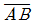
= 600.00m)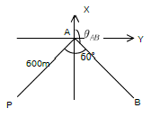
- Px = -354.577m, Py = -442.2⑤m
- Px = -466.884m, Py = -329.898m
- Px = -466.884m, Py = -442.2⑤m
- Px = -354.577m, Py = -329.898m
(정답률: 67%)
5과목: 측량학
81. 공공측량에 관한 작업규정의 작성권자는?
- 건설교통부장관
- 공공측량계획기관
- 국토지리정보원장
- 공공측량작업기관
(정답률: 85%)
82. 국토지리정보원장은 측량제도 및 기술의 발전을 위하여 새로운 측량기술의 연구개발 및 도입과 정보교환 등에 필요한 시책을 실시하여야 하는데 이 시책과 가장 관계가 먼것은?
- 지각의 위치변위 관찰
- 우주측지기술의 도입ㆍ활용
- 정밀측량기기의 개발
- 측량도서의 발간
(정답률: 75%)
83. 공공측량(公共測量)의 실시에 기초가 되는 것은?
- 기본측량 또는 다른 공공측량의 성과
- 기본측량 또는 지적측량의 성과
- 지적측량의 성과
- 삼각점과 수준점 사용
(정답률: 84%)
84. 기본측량의 실시에 관한 공고는 누가 하는가?
- 건설교통부장관
- 국토지리정보원장
- 시ㆍ도지사
- 행정자치부장관
(정답률: 20%)
85. 영구표지의 형상 중 1등 삼각점 반석의 평면 크기로 옳은 것은?
- 27㎝×27㎝
- 29㎝×29㎝
- 30㎝×30㎝
- 35㎝×35㎝
(정답률: 86%)
86. 1/25,000 지형도의 주곡선 간격은?
- 20m
- 15m
- 10m
- 5m
(정답률: 65%)
87. 다음은 기본측량 및 공공측량의 기준에 관한 설명이다. 잘못된 것은?
- 위치는 지리학적 경위도와 평균해면으로부터의 높이로 표시한다.
- 지리학적 경위도는 세계측지계에 따라 측정한다.
- 거리와 면적은 수평면상의 값으로 표시한다.
- 측량의 원점은 대한민국경위도원점과 수준원점으로 한다.
(정답률: 42%)
88. 측량법에서 정의한 측량계획기관이란?
- 기본측량 또는 공공측량에 관한 계획을 수립하는 자
- 일반측량에 관한 계획을 수립하는 자
- 당해 측량에서 얻은 최종성과를 보관하는자
- 측량성과를 얻을 때까지의 측량에 관한 작업의 기록을 정리하는 자
(정답률: 65%)
89. 지명의 고시에 포함되어야 하는 사항으로 잘못된 것은?
- 제정 또는 변경된 지명
- 위치(경도 및 위도로 표시한다._
- 소재지(행정구역으로 표시한다.)
- 지목과 지번
(정답률: 84%)
90. 측량법의 용어 정의 중 측량기록 이란?
- 측량에서 얻은 최종 결과 기록
- 측량 실시를 위한 자료의 기록
- 측량 작업 규정과 측량계획에 관한 기록
- 측량 성과를 얻을 때까지의 측량에 관한 작업 기록
(정답률: 91%)
91. 1/25,000 지형도에서 채택하고 있는 투영방법은?
- 만국횡단머케이트 투영(U.T.M)
- 횡단머케이트 투영(T.M)
- 몰와이드 투영
- 원추투영
(정답률: 90%)
92. 다음 중 지명 및 지명위원회에 관한 설명으로 잘못된 것은?
- 행정자치법 기타 다른 법령에 정한 이외의 지명은 지명 위원회에서 결정하고 건설교통부장관이 고시한다.
- 지명위원회는 시ㆍ군ㆍ구지명위원회, 시ㆍ도지며우이원회와 중앙지명위원회가 있다.
- 중앙지명위원회는 위원장 및 부위원장 각 1인을 포함한 20인 이내의 위원으로 구성된다.
- 중앙지명위원회의 위원장은 건설교통부장관이 된다.
(정답률: 9%)
93. 수치지도의 보완에 있어서 공공측량계획기관은 당해기관에서 제작한 수치지형도 및 수치주제도에 대하여 몇 년마다 몇회 주기적으로 보와하여야 하는가?
- 수치지형도 : 1년마다 1회이상, 수치주제도 : 1년마다 1회이상
- 수치지형도 : 2년마다 1회이상, 수치주제도 : 2년마다 1회이상
- 수치지형도 : 2년마다 1회이상, 수치주제도 : 3년마다 1회이상
- 수치지형도 : 3년마다 1회이상, 수치주제도 : 3년마다 1회이상
(정답률: 80%)
94. 기본측량 실시 공고에 포함되어야 할 사항이 아닌 것은?
- 측량의 실시지역
- 측량기술자의 명단
- 측량의 목적
- 측량의 종류
(정답률: 79%)
95. 측량업자가 고의로 측량을 부정확하게 한 경우에 대한 행정처분기준은?
- 영업정지 2개월
- 영업정지 4개월
- 영업정지 6개월
- 등록취소
(정답률: 67%)
96. 측량업의 등록기주이 아래 표와 같은 측량없은?
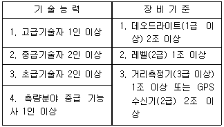
- 측지측량업
- 공공측량업
- 일반측량업
- 연안조사측량업
(정답률: 77%)
97. 측량업의 양도, 법인의 합병 등으로 crfid업자의 지위를 승계한 자는 그 승계사유가 발생한 날로부터 최대 며칠 이내에 신고 하여야 하는가?
- 60일
- 30일
- 20일
- 10일
(정답률: 82%)
98. 다음 일반측량중 공공측량으로 지정할 수 있는 것은?
- 측량실시지역의 면적이 1km2이상의 삼각측량
- 측량노선의 길이가 5㎞이상인 수준측량
- 측량노선의 길이가 1㎞이상인 다각측량
- 촬영지역의 면적이 500km2이상인 측량용 사진의 촬영
(정답률: 17%)
99. 측량업자의 법인이 파산되어 합벼외의 사유로 해산한 때 신고 의무자는?
- 청산인
- 관리인
- 상속인
- 법인대표
(정답률: 87%)
100. 부정한 방법으로 측량업의 등록을 한 자의 벌칙은?
- 200만원 이하의 과태료를 부과한다.
- 1년 이하의 징역 또는 1000만원 이하의 벌금에 처한다.
- 2년 이하의 징역 또는 2000만원 이하의 벌금에 처한다.
- 3년 이하의 징역 또는 3000만원 이하의 벌금에 처한다.
(정답률: 54%)